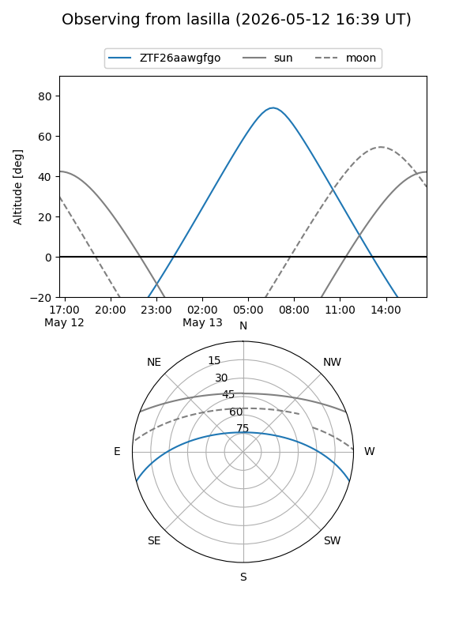
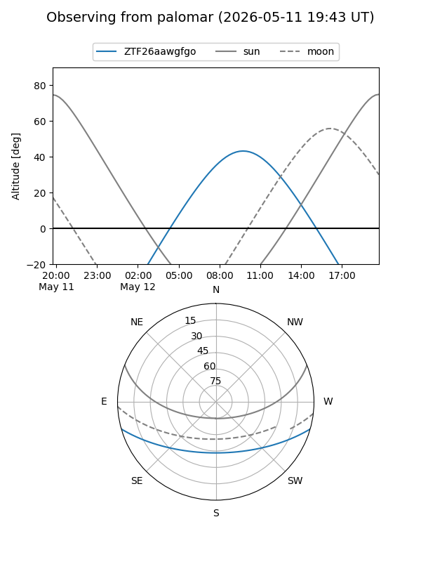

ZTF26aawgfgo
Target ZTF26aawgfgo at 2026-05-12 10:12
Aliases and brokers:
FINK: link
Lasair: link
ALeRCE: link
alt names
ZTF26aawgfgo (ztf,fink_ztf)
Coordinates:
equatorial (ra, dec) = 259.1118,-13.34429
equatorial (HMS+DMS) = 17:16:26.82,-13:20:39.44
galactic (l, b) = (9.6035,+14.09253)
Flags:
Photometry:
last ztfg=17.41
1 ztfg detections
Lightcurve
Visibility


Additional plots